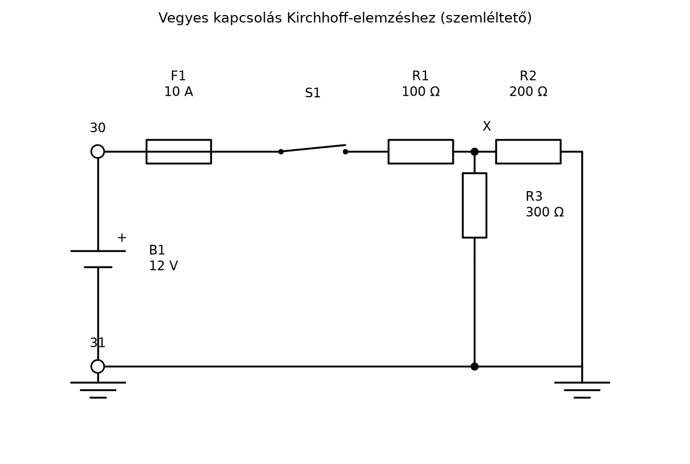

Egy dízel jármű hideg reggelen nehezen indul, a műhelyben arra gyanakszunk, hogy az indítórendszerben túl nagy a feszültségesés. Máskor a hűtőfolyadék-hőmérséklet jelzője hideg motornál is magas értéket mutat, pedig a motor nem melegedett túl. Ilyenkor nem elég a feszültség, áram és ellenállás fogalmát ismerni; azt kell pontosan látni, hogyan oszlik meg a feszültség egy áramkörben, és hogyan ágazik el az áram. Ezt tanítják a Kirchhoff-törvények, a soros és párhuzamos kapcsolás eredője, valamint az osztókapcsolások. A hibás csatlakozókon fellépő átmeneti ellenállás jelensége is ezek nélkül érthetetlen marad, pedig a járművillamossági hibák jelentős része itt keletkezik.
Képzeljük el a fedélzeti hálózatot úgy, mintha egy városi úthálózat lenne: az akkumulátor a szivattyútelep, a vezetékek az utak, a fogyasztók pedig kapuk, amelyek akadályozzák a forgalmat. A csomópontokban az autók nem tűnhetnek el; ahány autó bemegy, annyinak ki is kell jönnie. A zárt körben haladva, bármilyen útvonalon visszatérünk, a szintkülönbségek összege nulla. Ezt a két szabályt fogalmazzák meg villamos mennyiségekkel Kirchhoff törvényei.

Az ábrán az akkumulátor bal oldalon látható, a 30-as kapocs a felső, a 31-es kapocs az alsó sín. A biztosíték, a kapcsoló és az R₁ ellenállás soros ágban van, majd az R₂ és R₃ ellenállás párhuzamosan ágazik el. Az X pont csomópont, ahol az R₁-en átfolyó teljes áram kettéválik: egy része R₂-n, másik része R₃-on folyik tovább, majd a két ág újra egyesül a testsínen. Ezt az áramot számoljuk ki a következőkben.
Definíció. Csomópont: a kapcsolás olyan pontja, ahol legalább három vezeték vagy alkatrész-kivezetés találkozik. A fenti rajzon ilyen az X pont, valamint a 30-as és 31-es sín csatlakozási pontja, ha a testvezetékeket is beleszámítjuk.
Definíció. Hurok: a kapcsolási rajzon kijelölhető, zárt vezetékút, amelyen elindulva ugyanoda jutunk vissza, és egyetlen elemet sem érintünk kétszer.
Összefüggés. Kirchhoff I. (csomóponti) törvénye: egy csomópontban a befolyó és elfolyó áramok algebrai összege nulla:
Ha a befolyó áramot pozitívnak, az elfolyót negatívnak vesszük, akkor . Ez az elektromos töltésmegmaradás kifejezése: a csomópontban töltés nem halmozódhat fel, nem tűnhet el.
Összefüggés. Kirchhoff II. (huroktörvénye): egy zárt hurokban a feszültségemelkedések és feszültségesések előjeles összege nulla:
Ez az energiamegmaradásból következik: ha egy töltésegységet körbeviszünk a hurkon, a teljes elektromos energiaváltozás nulla kell legyen. A gyakorlatban a feszültségforrás által adott feszültség egyenlő a hurkon lévő fogyasztókon eső feszültségek összegével.
A Villamos alapfogalmak, Ohm-törvény, munka, teljesítmény és hatásfok alfejezetben az Ohm-törvényt már használtuk:
Ezt kapcsoljuk össze a két Kirchhoff-törvénnyel.
Szabály. Vegyes kapcsolás megoldási
sorrendje:
1. Keressük meg a tisztán soros és tisztán párhuzamos részeket, és
vonjuk össze azokat eredő ellenállássá.
2. Számítsuk ki a teljes áramkört: az akkumulátor-feszültséget osszuk el
a teljes eredő ellenállással.
3. Visszafelé haladva bontsuk ki az összevont részeket, számítva az
osztóképleteket.
4. Ellenőrizzük a Kirchhoff-törvényekkel, hogy a csomópontban az áramok
összege nulla, és a hurokban a feszültségek összege nulla.
Definíció. Soros kapcsolás: az elemek azonos áramú hurokban követik egymást, nincs köztük csomópont. Mindegyik elem árama azonos.
Összefüggés. Soros kapcsolás eredője:
Definíció. Párhuzamos kapcsolás: az alkatrészek mindkét kivezetése közös csomópontokhoz csatlakozik, így az áram szétágazik.
Összefüggés. Párhuzamos kapcsolás eredője, két ellenállásra a gyakorlatban jól használható törtes alak:
amiből
Több párhuzamos ellenállás esetén a reciprokos képletet kell használni:
Összefüggés. Feszültségosztó (terheletlen soros osztó): ha az U feszültség két sorosan kapcsolt ellenálláson oszlik meg, akkor az R₂-n eső feszültség:
Vagy általánosan, az ellenálláson eső feszültség:
Összefüggés. Áramosztó: ha az I áram két párhuzamos ellenálláson oszlik meg, akkor az R₁ ág árama:
és az R₂ ág árama:
Fontos tanulság: a párhuzamos ágak közül a kisebb ellenállás ágán folyik a nagyobb áram, mert a szorzatban a másik ág ellenállása szerepel. Ez a gépjármű-villamosságban is megmutatkozik: ha egy fogyasztóval párhuzamosan (pl. nedves, sérült szigetelésen át) kis ellenállású átvezetés keletkezik, azon nagy áram folyik, a közös vezetéken és biztosítékon nő a feszültségesés, ezért a többi fogyasztó is halványabb lesz, vagy kiold a biztosíték.
Definíció. Wheatstone-híd: két feszültségosztó párhuzamos kapcsolása, ahol a két osztópont közé egy mérőműszer vagy érzékelő kerül. A hidat akkor nevezzük kiegyenlítettnek, ha a két közbülső csomópont feszültsége azonos, ezért a középső ágban nem folyik áram. Ezt az állapotot használják ki például régi huzalos légtömegmérőkben, hőmérséklet-érzékelős hidakban vagy nyúlásmérő bélyeges mérésben.
Összefüggés. Kiegyenlítési feltétel négy hídellenállásra:
Ekkor a híd A és B pontja között a feszültség nulla. Ha az egyik ellenállás megváltozik, a híd kimozdul, és az A-B feszültség eltér nullától. A járműtechnikában a régi huzalos légtömegmérőnél a levegő sebessége hűti a huzalt, megváltoztatja az ellenállását, amely a hídban feszültségváltozást okoz; ezt az értéket dolgozza fel a motorvezérlő. Ma már gyakoribb a digitális jelű légtömegmérő, de a híd elve a mérőhidas érzékelőkben és a feszültségosztós jeladókban tovább él.
Amikor az áram ellenálláson folyik át, a töltéshordozók ütköznek a rácsszerkezettel, és az elektromos energia hővé alakul. Ezt a Joule-törvény írja le.
Összefüggés. Joule-törvény: az ellenálláson t idő alatt keletkező hő:
ha az ellenállás állandó. A teljesítmény:
Megjegyzés. A régi mértékegység, a kalória átszámítása: (ellenőrizendő: pontos érték). A járműjavításban leggyakrabban J és W egységet használunk.
Hőterjedés. A keletkező hő három módon távozik: hővezetéssel (pl. az izzítógyertya fém teste átadja a hőt a hengerfejnek), hőáramlással (pl. a hűtőlevegő elszállítja a hőt a biztosító környezetéből) és hősugárzással (pl. az izzószál, az izzítógyertya fűtőspirálja sugároz). A járművillamossági alkatrészek tervezésénél mindhárom tényezőt figyelembe kell venni.
Alkalmazások.
- Izzítógyertya: a dízel hidegindításakor a
fűtőspirálon átfolyó áram felhevíti a hegyét, ami hidegindításkor segíti
a befecskendezett tüzelőanyag párolgását és öngyulladását (a
dízelmotorban az öngyulladást a sűrítés hőmérséklete adja, a gyertya nem
gyújt). Jellemző árama több amper, teljesítménye típusonként néhány száz
W (ellenőrizendő: gyártói adat).
- Biztosító: az olvadószál méretezése pontosan a
Joule-hőre épül: a névleges áram fölött a szál elolvad, és megszakítja
az áramkört, mielőtt a vezeték vagy a fogyasztó károsodna.
- Fűtés: ablakfűtés, ülésfűtés, visszapillantó tükör
fűtés, dízel üzemanyag-szűrő fűtés, kartergáz-fűtés – mindegyik
ellenállásfűtés.
Definíció. Átmeneti ellenállás: a csatlakozó, kapocs, biztosítéktartó vagy testpont érintkezési felületén keletkező, a tervezettnél nagyobb ellenállás. Okozhatja oxidáció, fellazult csavar, korrózió, szennyeződés, melegedés miatt visszamaradt lágyulás.
Előírás. A jármű elektromos rendszerén a feszültségeséseket terhelés alatt, a gyártó által megadott határértékek szerint kell ellenőrizni. Példaként: 12 V-os indítókörben a pozitív ágon mért esés jellemzően nem haladhatja meg a értéket, a testoldalon pedig a értéket (ellenőrizendő: gyártói javítási adat).
Szabály. Feszültségesés-mérés elve: a feszültségmérőt mindig a vizsgált szakasz két végére kell kötni, miközben az áramkör terhelt. Ha a mért feszültségesés nagyobb, mint az előírt, az átmeneti ellenállás jelenlétét jelzi, még akkor is, ha ellenállásmérővel kis értéket mérnénk, mert az ellenállásmérés nem hozza létre a valódi terhelő áramot.
Figyelem. Az átmeneti ellenállás melegedést okoz: . Nagy áramú körben egy kis ellenállás is jelentős hőt termel, ami tovább rongálja az érintkezést, és akár tüzet is okozhat. A fellazult, megpörkölődött csatlakozót nem szabad csak összehúzni; a sérült csatlakozót a gyártó szerint ki kell cserélni.
Továbbvitt eredmény. A feszültségosztó és az átmeneti ellenállás itt tanult elvét használjuk a Generátorok, belső ellenállás és a szuperpozíció alfejezetben, amikor a generátor belső ellenállását és a kapocsfeszültség-változást vizsgáljuk. A feszültségosztó a diódás és Zener-diódás áramköröknél a Félvezetők, diódák, Zener-dióda és egyenirányítók, a mérőműszerek feszültségmérő bekötésénél a Méréstechnikai alapok: műszerek, mérési hibák, multiméter és lakatfogó, valamint a jármű elektromos hálózat áramútjainak kapocsjelöléses elemzésénél a(z) A fedélzeti hálózat felépítése, kapocsjelölés és áramútrajz alfejezetben tér vissza.
Adott: az ábrán látható 12 V-os hálózat,
,
,
.
Keresett: az eredő ellenállás, a teljes áram, az egyes
ellenállások feszültsége és árama.
Megoldás:
Először: a párhuzamos R₂-R₃ rész eredője:
A teljes eredő R₁ soros R₂₃-vel:
Főáram:
R₁ feszültsége:
A párhuzamos rész feszültsége:
R₂ és R₃ árama:
Ellenőrzés: a csomóponti törvény szerint , ami jó egyezésben van az főárammal. A kerekítésből adódó eltérés elfogadható. A huroktörvény szerint . ∎
Adott: a motorvezérlő 5 V-os tápfeszültségét egy
felhúzó ellenálláson át NTC hőmérséklet-érzékelőre kötik, amely a test
felé osztja le a feszültséget.
,
,
az NTC ellenállása hidegen
,
melegen
.
Keresett: a jelkimenet feszültsége hidegen és
melegen.
Megoldás: a feszültségosztó képlet:
Hidegen:
Melegen:
Az eredmény jól mutatja a negatív hőmérsékleti együtthatójú (NTC) érzékelő működését: a hőmérséklet növekedésekor az ellenállása csökken, ezért a jel feszültsége csökken. A motorvezérlő ezt a csökkenő feszültséget értelmezi hőmérsékletként. ∎
Adott: 12 V-os dízel indítási rendszer, az
izzítógyertya ellenállása melegen
,
áramfelvétele
.
A gyertya 8 másodpercig működik.
Keresett: a teljesítmény és a hő.
Megoldás:
A hő:
Ez a hő jórészt a fűtőtestben és annak környezetében jelenik meg. Ha ezt 100 g vízre számítjuk át, a hőmérséklet-emelkedés:
Ez csak szemléltető átszámítás, az izzítógyertya valós hőmérséklete sokkal magasabb, mert a hő nem vízbe, hanem fém és égéstéri levegő környezetbe távozik, és a hőátadási feltételek eltérnek. ∎
Adott: híd,
,
,
,
.
Keresett:
a) Mekkora
értéknél egyensúlyozott a híd?
b) Ha
,
mekkora a híd A–B pontja közötti feszültség?
Megoldás:
a) Egyensúly:
A negatív előjel csak a mérési irányt jelzi; a híd kimozdulásának nagysága . Ez a feszültségkülönbség jelzésként szolgál a vezérlőegység számára. ∎
Ellenőrzőlista:
- A kiszámított eredő ellenállás kisebb-e a legkisebb párhuzamos elem
ellenállásánál?
- A csomóponti törvény szerint a befolyó és elfolyó áramok összege
nulla-e?
- A huroktörvény szerint a tápfeszültség egyenlő a soros
feszültségesések összegével?
- Az osztóképletben a kiválasztott ellenállás van-e a számlálóban?
- A feszültségesés-mérésnél terhelés alatt mérünk-e?
- A mértékegységek végig szerepelnek-e minden lépésnél?
Egy középkategóriás dízel járműnél a hűtőfolyadék-hőmérséklet-jelző indítás után azonnal magas értéket mutat. A diagnosztikai műszer élő adatai szerint a hőmérséklet-érzékelő jele , ami erősen túl magas hőmérsékletet jelent, pedig a motor hideg. Az első gondolat az érzékelő cseréje lenne. A feszültségosztó elvét alkalmazva ellenőrizzük a felhúzó ellenállást és a csatlakozó érintkezését. Kiderül, hogy az érzékelő csatlakozójába víz jutott, a jelvezeték és a test között oxidos, nedves szivárgóút alakult ki (az 5 kΩ-os érzékelővel párhuzamosan kb. 145 Ω), ezért az alsó ág eredője kb. 140 Ω-ra esik, és a jel körülire csökken: . A motorvezérlő ezt tévesen magas hőmérsékletnek értelmezi. Ha viszont a testágba soros átmeneti ellenállás kerülne (pl. ), a jel kissé nőne (), a vezérlő hidegebbnek látná a motort; szakadásnál a jel -ra ugrik. A csatlakozó tisztítása és tömítése után a jel visszatér a helyes körüli értékre, a hiba megszűnik.
Egy másik esetben az indítómotor lassan forgat. Az indítókör pozitív ágán a feszültségesést terhelés alatt megmérve esést kapunk a gyári határérték helyett. A melegedő csatlakozó az akkumulátor pozitív sarujánál mozogni kezdett, megégett. A saru és a csatlakozó felület cseréje, tisztítása és korrózióvédelme után az esés -ra csökken, az indítómotor újra megfelelő fordulatszámmal forgat.
Cél: átmeneti ellenállás kimutatása a jármű 12 V-os elektromos hálózatának nagyáramú körében.
Jármű- és adatazonosítás: gyártmány, típusszám, alvázszám, motorszám, gyártási év, a vizsgált áramkör kapocsjelölései. A mérési határértékeket a gyártó javítási kézikönyvéből kell kikeresni.
Szükséges eszközök: multiméter (DC V, mV tartomány), mérőzsinórok, csatlakozó- és sorkapocstisztító, korrózióvédő kenőanyag, szigetelőkesztyű, feszültségmentesített mérési pontok azonosításához kapcsolási rajz.
Biztonsági korlát. A feladat tanműhelyi környezetre, oktató felügyeletére és a gyártói javítási utasítás betartására vonatkozik; a megadott értékek tanulási példák. A feszültség alatt álló járművillamossági mérésnél tűzveszély és rövidzárlat-veszély áll fenn; a multimétert a megfelelő méréshatárba kell állítani, a mérőzsinórokat hibaüzenet és sérülés nélküli állapotban kell használni. Az akkumulátor lekötésekor először a negatív pólust kell leoldani, felszereléskor utoljára kell visszakötni (ellenőrizendő: gyártói előírás az adatmentésre és a rendszerek tanítására).
Környezetvédelem. A korrodált csatlakozókból eltávolított szennyeződést, oxidot és a cserélt alkatrészeket veszélyes hulladékként, a műhely szabályzata szerint kell gyűjteni. A tisztítószert biztonsági adatlapja szerint kell kezelni.
Munkalépések:
1. Győződjünk meg arról, hogy a jármű rögzítőfékje behúzott, a
sebességváltó üresben van, és a kerekek kiékeltek.
2. Az áramkör terhelését a vizsgálathoz megfelelően hozzuk létre:
világításnál a fogyasztó bekapcsolásával; indítókörnél a motor
beindulását a gyártói eljárással akadályozzuk meg (ellenőrizendő), a
mérőzsinórokat a forgó alkatrészektől (szíj, ventilátor) távol vezetjük,
a segítő csak a mérő jelzésére és legfeljebb kb. 5 s-ig indítózik
(ellenőrizendő: gyártói adat). Automata váltónál a választókar P
állásban van.
3. A multimétert DC V tartományba, lehetőleg mV felbontásra
állítsuk.
4. A pozitív ág méréséhez kössük a műszer egyik mérőzsinórját a vizsgált
csatlakozó feszültségforrás felőli oldalára, a másikat a fogyasztó
felőli oldalára.
5. A testoldali esésnél a mérőzsinórt a fogyasztó testpontja és az
akkumulátor negatív pólusa közé kötjük.
6. A terhelést kapcsoljuk be, és olvassuk le a feszültségesést.
Jegyezzük fel az értéket.
7. Hasonlítsuk össze a gyártói határértékkel. Például indítókörben:
pozitív ágon
,
testoldalon
alatt (ellenőrizendő).
8. Ha az érték nagy, keressük meg a melegedő csatlakozót, bontsuk meg,
tisztítsuk meg, és ha kell, cseréljük ki a sérült érintkezőt.
9. Mérés után végezzük el a javítást, húzzuk meg a gyártó által előírt
nyomatékkal a kötést (ellenőrizendő), majd mérjünk újra.
10. Dokumentáljuk a mért értékeket a munkalapon: előtti és utáni
feszültségesés, javítás módja, alkatrészek.
Az ábra a 4–5. lépést mutatja: a pozitív ágon az akkumulátor + pólusa és az indítómotor 30-as kapcsa, a testoldalon az indítómotor háza és az akkumulátor − pólusa közé kötjük a műszert, terhelés (indítózás) alatt. A részlet a tipikus hibát szemlélteti: a csatlakozón át kell mérni, mert a vezeték két végén mérve a saru átmeneti ellenállása kimarad. A HTML-változatban a mérőpontok választhatók, a műszer szimulált (szemléltető) átmeneti ellenállásokkal számol.
Tipikus hiba:
- Az ellenállásmérővel végzett hideg ellenőrzés értéke jó lehet, de a
meleg, terhelt állapotot nem mutatja.
- A mérést nem a csatlakozón, hanem a vezeték két végén végzik, így a
csatlakozó érintkezési hibája kimutathatatlan.
- A testoldali esés mérését elfelejtik, pedig a világítás és az
indítómotor hibái gyakran testoldali átmeneti ellenállásból
fakadnak.
A csomóponti törvényt a huroktörvénnyel keverik. Gyakran hallani: „a csomópontban a feszültségek összege nulla.” Ez helytelen. A csomópontban az áramok összege nulla, a feszültségek összegét a hurokra kell felírni. A szerelői számítás így téves egyenletet ad.
A feszültségosztó képletét rosszul állítják fel. A leggyakoribb hiba, hogy az és közül a rossz ellenállást teszik a számlálóba. A számlálóba mindig az az ellenállás kerül, amelyen a feszültséget keressük. Egy járműműszer-jeladónál ezért fontos, hogy a jelvonal a test felőli oldalon legyen, különben a vezérlő teljesen más értéket lát.
A párhuzamos eredőt egyszerűen összeadással számolják. Párhuzamos kapcsolásnál az eredő mindig kisebb a legkisebb ellenállásnál. Ha valaki eredőt kap, azzal a teljes áramot is tévesen számítja. Az ilyen számítási hibát könnyű felismerni a nagyságrend-ellenőrzéssel.
A feszültségesés-mérést feszültségmentes állapotban vagy ellenállásmérővel végzik. Az átmeneti ellenállás csak terhelés alatt, feszültségesés-módszerrel látszik megbízhatóan. Az ellenállásmérő kis árama nem hozza létre azt a melegedést és oxidréteg-átütési állapotot, mint a valódi terhelés.
1. feladat (A)
Számítsa ki három sorosan kapcsolt ellenállás
(,
,
)
eredőjét. Mekkora áram folyik az áramkörben
feszültség hatására?
2. feladat (A)
Egy feszültségosztó
feszültségen
és
ellenállásokból áll. Mekkora a feszültség
-n?
3. feladat (B)
Az ábrán látható vegyes kapcsolásban
,
,
,
.
Számítsa ki az eredő ellenállást, a főáramot, és minden ellenállás
áramát és feszültségét.
4. feladat (B)
Egy párhuzamos kapcsolás ágába
teljes áram folyik be. Az ágak ellenállása
és
.
Számítsa ki az áramosztóval mindkét ág áramát, és ellenőrizze a
csomóponti törvényt.
5. feladat (C)
Wheatstone-hídban
,
,
,
,
.
Számítsa ki a híd A–B pontja közötti feszültséget, és állapítsa meg,
hogy az A vagy a B pont van magasabb potenciálon, illetve mekkora az
egyensúlyi
értéke.
6. feladat (D)
Egy jármű világítási körén a fényszóró bal oldalon párásodik, és
észrevehetően halványabb. A jobb oldali izzó feszültségét mérve az izzó
kapcsain terhelés alatt
-ot
kapunk, a bal oldalinál csak
-ot.
Az izzótest felé vezető csatlakozón
feszültségesést mérünk, a testoldalon
-ot.
Mi a legvalószínűbb hiba, milyen méréssel igazolja, és hogyan javítja? A
határérték a gyártó szerint pozitív oldalon
,
testoldalon
(ellenőrizendő).
Önellenőrzés – válaszok
1. feladat (A)
Soros eredő:
.
Áram:
.
Ellenőrzés: a soros ellenállások feszültségeinek összege
.
2. feladat (A)
Feszültségosztó:
.
Ellenőrzés:
feszültsége
,
összegük
.
3. feladat (B)
A párhuzamos
és
eredője:
.
Teljes eredő:
.
Főáram:
.
.
.
.
.
Ellenőrzés:
,
és
.
A kerekítésből adódó kis eltérés elfogadható.
4. feladat (B)
.
.
Ellenőrzés:
,
a csomóponti törvény teljesül.
5. feladat (C)
A két osztópont feszültsége:
.
.
.
A B pont magasabb potenciálon van, mert az A-hoz képest negatív a
különbség.
Az egyensúlyi ellenállás:
.
6. feladat (D)
A tünetek: a bal oldali izzó feszültsége jóval alacsonyabb, mint a jobb
oldali, a csatlakozó felé vezető pozitív ágon
,
a testoldalon
esés mérhető. A gyártói határértékeket túllépő feszültségesés
csatlakozó-átmeneti ellenállásra utal, különösen a pozitív oldalon. A
párásodás és a halvány fény is megerősíti, hogy a csatlakozó nagy
valószínűséggel melegszik és oxidálódott.
Méréssel igazoljuk: a fényszóró izzó foglalatához vezető pozitív ág
csatlakozójának két oldalán, terhelés alatt, mV felbontású multiméterrel
mérjük a feszültségesést. Ha az esés a határérték felett van, akkor a
csatlakozó szétszedése után szemrevételezéssel ellenőrizzük az
érintkezők oxidációját, megolvadt szigetelését.
Javítás: a csatlakozót feszültségmentes állapotban bontjuk, az
érintkezőket cseréljük vagy alaposan megtisztítjuk, korrózióvédő
kenőanyaggal kezeljük, majd a gyártó szerinti meghúzási nyomatékkal
rögzítjük. Végül újra megmérjük a feszültségesést. A helyes eredménynek
,
illetve testoldalon
alatt kell lennie (ellenőrizendő). A javítás után ellenőrizzük az izzó
fényét és a munkalapon dokumentálunk.
A Kirchhoff-törvények a járművillamossági hibakeresés alapjai. A csomóponti törvény szerint egy csomópontban a befolyó és elfolyó áramok összege nulla, a huroktörvény szerint pedig egy zárt hurokban a feszültségek előjeles összege nulla. A soros kapcsolású ellenállások összeadódnak, a párhuzamosok eredője kisebb a legkisebb ellenállásnál; két ellenállásra . A feszültségosztó képlet , az áramosztó . A Wheatstone-híd akkor kiegyenlített, ha . Az áram hőhatása , a hővezetés, hőáramlás és hősugárzás határozza meg az izzítógyertya, a biztosító és a fűtőbetétek működését. A csatlakozókon fellépő átmeneti ellenállást terhelés alatti feszültségesés-méréssel mutatjuk ki; a melegedő, oxidált csatlakozót ki kell cserélni. A feszültségosztó és a feszültségesés-mérés elvét a generátor, a félvezetős áramkörök, a méréstechnika és a fedélzeti hálózat diagnosztikája alfejezetekben használjuk tovább.
Forrástípusok: MSZ EN 60617 / IEC 60617 rajzjelek (kapcsolási rajz), gyártói javítási kézikönyvek feszültségesési határértékei, elektrotechnikai tankönyvi alapok.
Ellenőrizendő állítások:
- a kalória pontos átszámítása
;
- az indítókör feszültségesési határértékei (pozitív
,
test
)
gyártótól függenek;
- a 12 V-os jármű elektromos rendszer mérési biztonsági
követelményei;
- a példaként használt izzítógyertya ellenállása és árama
típusfüggő.